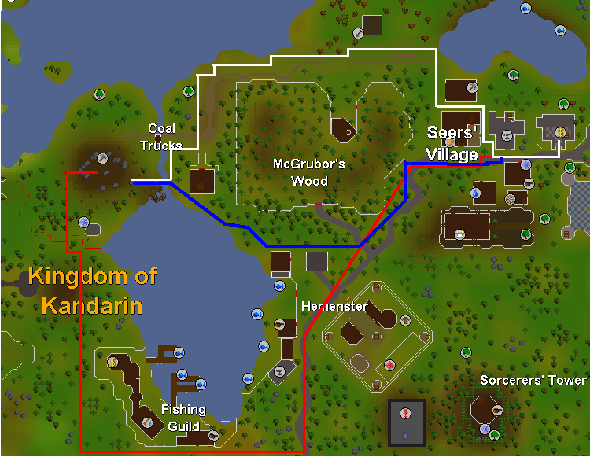
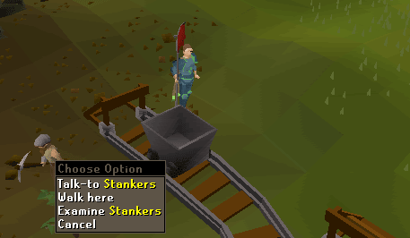

Coal Trucks
Items/skills needed to start
A pickaxe and 30 mining is required to mine the coal, 55 combat would be a great help so the giant bats don't attack you and level 20 agility will save you a lot of time getting there by walking over the log.Introduction
Welcome to the coal trucks. This is the best place to mine coal until you are level 60 mining. Then you can get into the mining guild which is much better. This is a unique way of mining as you can put 120 into the coal trucks, then go to Seers' Village, take the coal out of the trucks and put it in the bank.What To Do
Ok so you're ready to get started. Get you pickaxe, some sort of protection but not armour as it weighs you down. I would take an amulet of defence, boots of lightness and if you have 45 magic runes to teleport to Camelot. Now I will tell you how to get there.
White = If you have 20 agility. (With a long run).
Blue = If you have 20 agility. (Shortest route).
Red= If you don't have 20 agility.
How it All Works and What to Do
You can deposit and withdraw your coal at any of trucks along the track. To really understand you need to be doing this as you are reading this guide.There are 18 coal to mine so there is really no need to try to get the coal before other players as there is enough to go round. After you have a full inventory of coal head slightly north to where Mr. Stankers is and either use one of the coal with a coal truck or right click a truck and click on "deposit coal.' Repeat this until you have 120 coals in the trucks. I think they will always there and I definitely know they other players cannot steal them. I left it for 7 hours and they were still there.
To see how many coal you have just left click a truck. If you are teleporting you can fill up your inventory with more coal. If you aren't, have an empty inventory (less weight) and run back to Seers' Village coal trucks, get some out, deposit them in the bank and repeat until you have got them all out. When you have done this go back to the coal trucks and do the same thing again.

Here is Mr. Stankers. He will tell you about the coal trucks and will give you a poison chalice for free. ( It's a cocktail drink). Watch out when you drink it because it randomly hits or heals 1-49 hit points. There closest trucks are also here.

This is the main area where you can mine the coal and get your combat up by killing the level 27 giant bats.

This is the log balance you can cross to get to Seers' Village bank quicker.
Thanks for reading this guide and I hoped you found it useful.
This special report was written by Crepper. Thanks to hamster hat, toastie162, Aakanaar, and AvnBrenden for corrections.
This special report was entered into the database on Thu, Sep 08, 2005, at 08:40:50 PM by DRAVAN and was last updated on Sat, Sep 17, 2005, at 12:54:19 AM by Fireball0236.